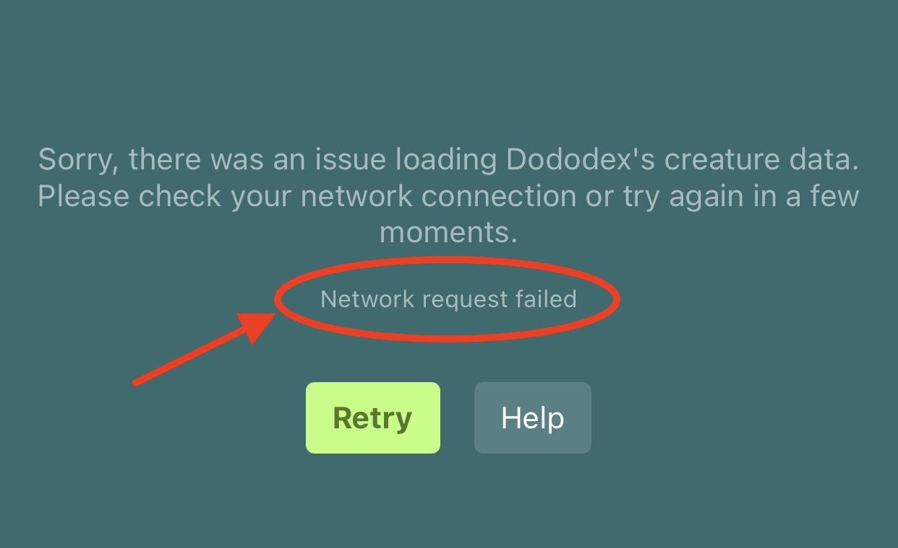
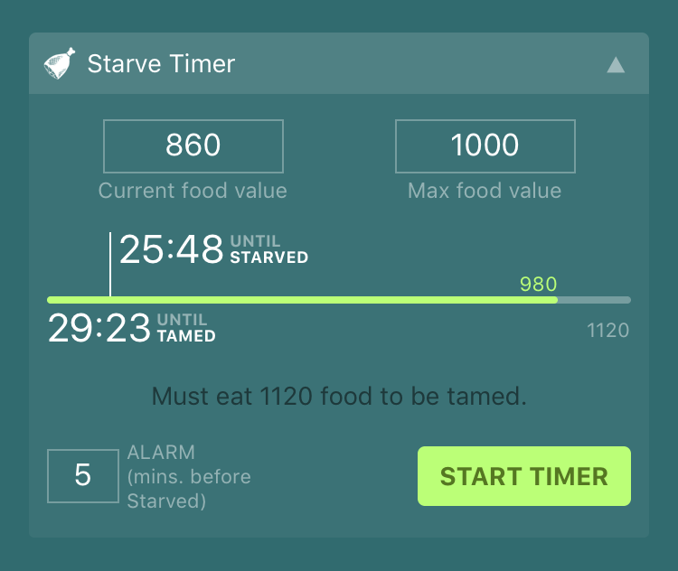

dododex 深度盘点：把 ARK 驯服这件事拆得通透的辅助神器
一款专为 ARK 生存进化玩家打造的全能辅助工具——从倍率校准到击晕节奏，从计时器同步到属性计算，dododex 把驯服一条龙的每个环节都拆解得明明白白。
ARK：生存进化的驯服系统是许多玩家又爱又恨的存在。爱它在于亲手把一头野生巨兽收入麾下的成就感无可替代；恨它在于这套系统的变量实在太多——倍率、节奏、眩晕、饥饿……任何一个参数填错，就是弹药白烧、龙醒跑掉的惨剧。dododex 就是在这样的背景下被打磨出来的，它的官网上有完整的帮助中心和平台适配说明：它不替你玩游戏，但它帮你把驯服这件事从「凭感觉抡圆了射」变成「按数据精确操作」。
倍率校准：所有计算的根基
如果你只用过 ARK 官方服的默认设置，可能对「倍率」这个概念没太在意。但只要你进过小部落服、末日服，或者赶过官方的进化活动周末，就会发现倍率体系是整个驯服计算器的地基——倍率填错，后面所有数字都是空中楼阁。
官方服平时驯服速度是 1，活动周末通常跳到 2；小部落服直接是 2.5；末日服更狠，驯服、孵化、成熟、经验全是 3 倍。而且这些倍率不会自动同步到应用——每次活动开始和结束，你得手动改过来。dododex 在这块做得最贴心的是「预设」功能：平时用官方服基准预设，活动周末切 Evolution Event 预设，结束再切回来，不用每次手改五项数字。
更多服型、更多平台还藏着更细的坑。比如手游版（ARK: Ultimate Mobile Edition）的单人驯服基准是 2.5 倍、幼龙成熟高达 40 倍，但游戏内显示却全是 1——直接沿用 PC 经验填进去数字必然对不上。买了 ARK Pass 之后还要再叠加自定义倍率，等于二次乘法。dododex 把这些平台差异都整理成了对照表，手游玩家对照着填一遍就能校准。
更隐蔽的陷阱是「单机设置」开关。这个在官方服必须关掉的选项一旦误开，会把所有倍率整体再抬一轮，导致计算结果成倍偏差——很多老玩家都栽过这个跟头，把应用数字反复核对三遍还找不到问题，最后才发现是这个开关。dododex 的自检功能里专门留了一条检查项，渡渡鸟实测五分钟就能排除设置因素。
击晕与麻醉：节奏比数量更重要
很多新手打晕龙的思路是「抡圆了狂射」，结果弹药用光龙还醒着。dododex 在这块揭示了一个反直觉的真相：眩晕是有时间形状的，节奏错了等于用漏打气筒——打太快、打太慢都是浪费。
机制简单说：命中瞬间眩晕开始注入，大部分武器的眩晕在约 5 秒内逐步叠加完成；停顿 1 秒之后，第 6 秒起眩晕开始衰减。所以最优节奏是每 5 秒一枪——上一发刚叠满，下一发无缝跟上，衰减根本没机会吃掉已有眩晕。
打太慢的后果很好理解：间隔超过 6 秒，衰减就开始生效。而且眩晕衰减速度因生物而异、还随等级上升——高级别南巨的眩晕掉得飞快，间隔 7 秒再打第二发，第一发的眩晕几乎全白打。dododex 的击晕区有个「发间秒数」设置，把你真实的射击节奏填进去，发数估算会按衰减重算，宁可保守填 5~6 秒。
打太快的误解更深：它不浪费眩晕量，但会造成眩晕积压——后发的眩晕还在排队注入，龙暂时没晕。典型场景：表上说 10 支箭，你 10 秒内全射完了龙没倒，以为算错了继续射，结果再等几秒积压的眩晕一兑现它自己就倒了，多射的每一发都是白扔的弹药和额外死亡风险。不过在目标小、移动快、预期会射失的时候，刻意稍快一点制造积压缓冲反而是明智选择——漏一发也不至于让衰减乘虚而入。

计时器：驯服全程的精密节拍器
饿驯计时器和眩晕计时器是 dododex 日常使用频率最高的两个功能。前者帮你算着「这只龙还能饿多久才能喂第一口」，后者帮你盯紧「还剩多少麻醉药才能保持它不醒」。两个计时器的漂移机制、重同步操作完全一致，学会一个等于会两个。
计时器漂移是多人服特有的问题。应用在本地按固定速率跑时间，而游戏内的饥饿和眩晕在服务器上跑，服务器延迟会让游戏侧「走得断断续续」——应用没停，游戏停了，两边渐渐错开。大型、高等级、高食物/高眩晕速率的生物漂移最明显，因为同样 3 秒的偏差，在速率越快的生物身上后果被放大得越多。
标准处理非常简单：观察游戏内实际值，把应用计时器暂停几秒，等游戏侧的真实进度「追上」应用显示的数值，再恢复计时即可。这个操作成本低，长时驯服里做上几次就够。
繁育计时器的精度要求低得多，通常不用频繁对齐。dododex 把三个计时器放在同一个模块里，长时驯服时可以一边喂一边瞟一眼，不用在多个页面之间切来切去。

属性与繁育：从孵化到变异的数据全链路
驯服只是第一步，孵化、成长、属性变异才是 ARK 养成链条里更深的水。dododex 的属性计算器能根据野生龙的属性反推它的驯服加成，繁育计算器帮你算孵化温度、幼龙食物消耗、成熟时间。
繁育这块最实用的一个细节是温度区间计算——不同生物的蛋需要不同的孵化温度，dododex 会给出推荐区间，甚至告诉你在极端气候的地图上应该用空调还是篝火堆。很多新手在冰原或火山孵蛋死活出不来，就是没注意到温度差了一两度。
不过属性计算也有边界。手游版飞行生物的耐力属性在应用里就不准，这是平台数据差异导致的；某些生物的叼取能力在 PC 版和手游版之间也有出入。在dododex文档的百科模块里有一张能力矩阵，把各平台的差异点列成了清单，对照着查就行。想入手的话，官方下载页直接拿最新版本。
短板也要说
dododex 虽然全面，但并非没有局限。首先它是一款数据驱动的辅助工具，本质上是帮助你做决策、省弹药，不会替你操作游戏——该走位还是走位，该补麻醉还是得补，工具解决不了手残的问题。
其次平台适配虽然覆盖了 PC、主机、手游三大平台，但各平台之间的某些数据差异（比如手游飞行生物耐力）目前只能靠用户对照百科手动修正，应用本身不会自动标注平台。对多平台玩家来说，在不同设备上切换时得记得核对一遍设置。
最后是活动倍率的同步始终需要手动操作。dododex 有配套站点实时更新官方服倍率，但应用本身不会自动拉取——这是官方帮助中心明确说明的限制，不是工具做不到，是官方 API 不开放这个接口。
什么样的人该用它
如果你是刚入坑 ARK 的新手，dododex 能帮你避开最常见的几个坑——驯前查倍率、击晕算节奏、计时器偶尔暂停重同步，这三件事做到位，驯服成功率至少翻两番。
如果你是在官方服长期玩的老玩家，进化活动周末的倍率切换和小部落服的特殊倍率是你一定会遇到的场景。dododex 的预设功能和活动公告同步更新，切换一次就能校准，不用每次手改五项。
如果你同时玩 PC 和手游，两套完全不同的倍率体系和 ARK Pass 的叠加逻辑会让你头大。dododex 把两个平台的基准倍率、单机/多人区分、以及平台专属的数据差异都整理成了对照表，两边切换时对照着填一遍就能校准。
综上，dododex 是一款把「驯服一条龙」这件事拆得通透的辅助工具——从根基上的倍率校准，到击晕环节的节奏把控，再到全程的计时器守护，每个环节都对应着具体的踩坑经历和解决思路。它不替你玩，但它让你玩得更笃定。这套资料在 GitHub、Gitee、GitCode 三个仓库都有备份，想深入看完整帮助中心的可以直接去翻翻。